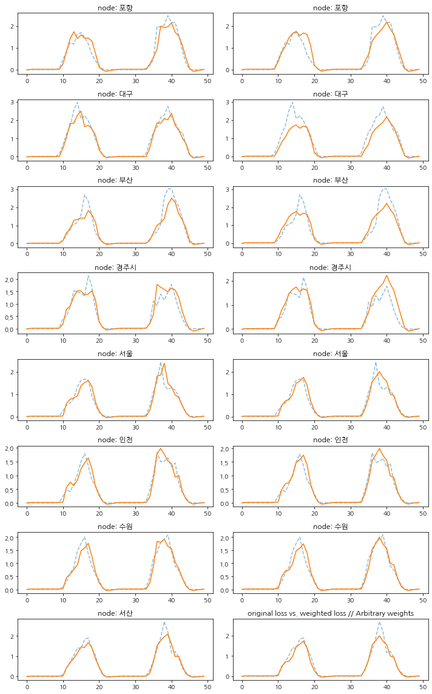
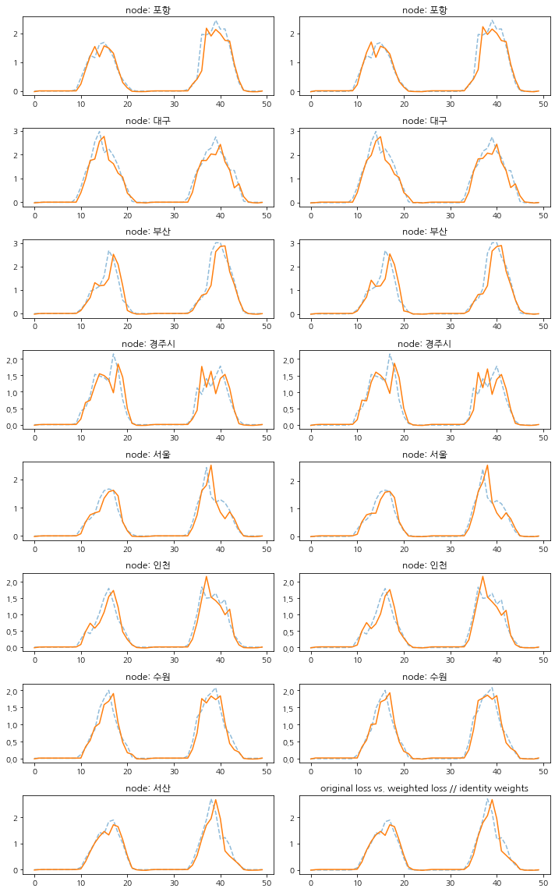
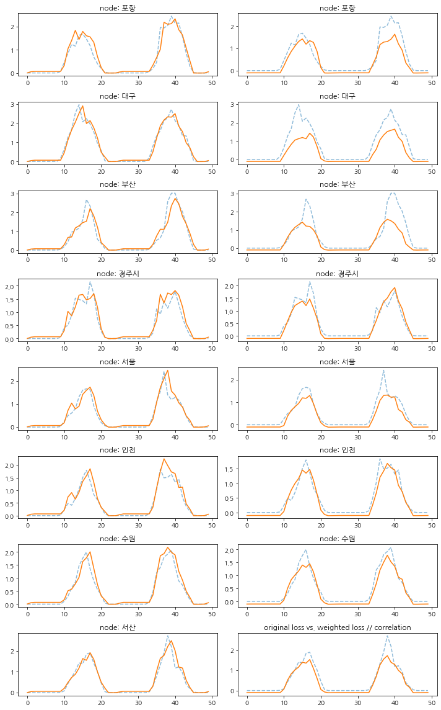

class Loader(object):"""Hourly solar radiation of observatories from South Korean for 2 years. Vertices represent 44 cities and the weighted edges represent the strength of the relationship. The target variable allows regression operations. (The weight is the correlation coefficient of solar radiation by region.) """# def __init__(self, url):# self.url = url# self._read_web_data()# def _read_web_data(self):# self._dataset = json.loads(urllib.request.urlopen(self.url).read().decode())def__init__(self, data_dict):self._dataset = data_dictdef _get_edges(self):self._edges = np.array(self._dataset["edges"]).Tdef _get_edge_weights(self):# self._edge_weights = np.array(self._dataset["weights"]).T edge_weights = np.array(self._dataset["weights"]).T scaled_edge_weights = minmaxscaler(edge_weights)self._edge_weights = scaled_edge_weights""" def _get_targets_and_features(self): stacked_target = np.stack(self._dataset["FX"]) standardized_target = (stacked_target - np.mean(stacked_target, axis=0)) / ( np.std(stacked_target, axis=0) + 10 ** -10 ) self.features = [ standardized_target[i : i + self.lags, :].T for i in range(standardized_target.shape[0] - self.lags) ] self.targets = [ standardized_target[i + self.lags, :].T for i in range(standardized_target.shape[0] - self.lags) ] """def _get_targets_and_features(self): stacked_target = np.array(self._dataset["FX"])self.features = [ stacked_target[i : i +self.lags, :].Tfor i inrange(stacked_target.shape[0] -self.lags) ]self.targets = [ stacked_target[i +self.lags, :].Tfor i inrange(stacked_target.shape[0] -self.lags) ]def get_dataset(self, lags: int=4) -> StaticGraphTemporalSignal:"""Returning the Solar radiation Output data iterator. Args types: * **lags** *(int)* - The number of time lags. Return types: * **dataset** *(StaticGraphTemporalSignal)* - The Solar radiation Output dataset. """self.lags = lagsself._get_edges()self._get_edge_weights()self._get_targets_and_features() dataset = StaticGraphTemporalSignal(self._edges, self._edge_weights, self.features, self.targets )return dataset
Creating weights
solar.shape
(2568, 8)
# solar datasetsolar_ = pd.read_csv('./data2/restructuring_data.csv')solar = solar_[['포항','대구','부산','경주시','서울','인천','수원','서산']]# solar = solar.drop('date', axis=1)
포항 대구 부산 경주시 서울 인천 수원
포항 1.0000000 0.8424895 0.6425640 0.9040996 0.1716328 0.3307638 0.3557177
대구 0.8424895 1.0000000 0.7197786 0.8512829 0.2313584 0.3601384 0.4125374
부산 0.6425640 0.7197786 1.0000000 0.7213258 0.1482832 0.2977739 0.2707934
경주시 0.9040996 0.8512829 0.7213258 1.0000000 0.1328790 0.3023132 0.3141259
서울 0.1716328 0.2313584 0.1482832 0.1328790 1.0000000 0.8747676 0.8865986
인천 0.3307638 0.3601384 0.2977739 0.3023132 0.8747676 1.0000000 0.8817441
수원 0.3557177 0.4125374 0.2707934 0.3141259 0.8865986 0.8817441 1.0000000
서산 0.4348638 0.4949508 0.3490800 0.3859630 0.7646948 0.8549585 0.8852652
서산
포항 0.4348638
대구 0.4949508
부산 0.3490800
경주시 0.3859630
서울 0.7646948
인천 0.8549585
수원 0.8852652
서산 1.0000000
포항 대구 부산 경주시 서울 인천 수원
포항 1.0000000 0.9121993 0.8781102 0.9411877 0.6918432 0.7400082 0.7536582
대구 0.9121993 1.0000000 0.8951451 0.9202234 0.7328353 0.7719844 0.7945932
부산 0.8781102 0.8951451 1.0000000 0.8967065 0.7005214 0.7527684 0.7563125
경주시 0.9411877 0.9202234 0.8967065 1.0000000 0.6786022 0.7293137 0.7448947
서울 0.6918432 0.7328353 0.7005214 0.6786022 1.0000000 0.9237048 0.9294152
인천 0.7400082 0.7719844 0.7527684 0.7293137 0.9237048 1.0000000 0.9324108
수원 0.7536582 0.7945932 0.7563125 0.7448947 0.9294152 0.9324108 1.0000000
서산 0.7742449 0.8111463 0.7718636 0.7634749 0.8792860 0.9115902 0.9264367
서산
포항 0.7742449
대구 0.8111463
부산 0.7718636
경주시 0.7634749
서울 0.8792860
인천 0.9115902
수원 0.9264367
서산 1.0000000
data_dict1={'edges':[[i,j] for i inrange(N) for j inrange(N)], 'node_ids': {node_ids[i]: i for i inrange(N)}, 'weights':W.reshape(-1).tolist(),'FX':FX}data_dict2={'edges':[[i,j] for i inrange(N) for j inrange(N)], 'node_ids': {node_ids[i]: i for i inrange(N)}, 'weights':W2.reshape(-1).tolist(), 'FX':FX}data_dict3={'edges':[[i,j] for i inrange(N) for j inrange(N)], 'node_ids': {node_ids[i]: i for i inrange(N)}, 'weights':W3.reshape(-1).tolist(), 'FX':FX}data_dict4={'edges':[[i,j] for i inrange(N) for j inrange(N)], 'node_ids': {node_ids[i]: i for i inrange(N)}, 'weights':W4.reshape(-1).tolist(), 'FX':FX}
yhat_test_org = torch.stack([lrnr1_org.model(snapshot.x,snapshot.edge_index, snapshot.edge_attr) for snapshot in test_dataset1]).detach().numpy()yhat_test_wgt = torch.stack([lrnr1_wgt.model(snapshot.x,snapshot.edge_index, snapshot.edge_attr) for snapshot in test_dataset1]).detach().numpy()yhat_test_org2 = torch.stack([lrnr2_org.model(snapshot.x,snapshot.edge_index, snapshot.edge_attr) for snapshot in test_dataset2]).detach().numpy()yhat_test_wgt2 = torch.stack([lrnr2_wgt.model(snapshot.x,snapshot.edge_index, snapshot.edge_attr) for snapshot in test_dataset2]).detach().numpy()yhat_test_org3 = torch.stack([lrnr3_org.model(snapshot.x,snapshot.edge_index, snapshot.edge_attr) for snapshot in test_dataset3]).detach().numpy()yhat_test_wgt3 = torch.stack([lrnr3_wgt.model(snapshot.x,snapshot.edge_index, snapshot.edge_attr) for snapshot in test_dataset3]).detach().numpy()yhat_test_org4 = torch.stack([lrnr4_org.model(snapshot.x,snapshot.edge_index, snapshot.edge_attr) for snapshot in test_dataset4]).detach().numpy()yhat_test_wgt4 = torch.stack([lrnr4_wgt.model(snapshot.x,snapshot.edge_index, snapshot.edge_attr) for snapshot in test_dataset4]).detach().numpy()
yhat_test_org.shape, yhat_test_wgt.shape
((257, 8, 1), (257, 8, 1))
yhat_test_org2.shape, yhat_test_wgt2.shape
((257, 8, 1), (257, 8, 1))
import matplotlib.pyplot as pltplt.rcParams['font.family'] ='NanumGothic'
V =list(data_dict1['node_ids'].keys())
1. arbitrary weights
fig,axes = plt.subplots(N,2,figsize=(10,N*2))T =50for i,ax inenumerate(axes): ax[0].plot(np.array(test_dataset1.targets)[-T:,i],'--',alpha=0.5,label='observed') ax[1].plot(np.array(test_dataset1.targets)[-T:,i],'--',alpha=0.5,label='observed') ax[0].set_title('node: {}'.format(V[i])) ax[1].set_title('node: {}'.format(V[i])) ax[0].plot(yhat_test_org[-T:,i],label='predicted (test)') ax[1].plot(yhat_test_wgt[-T:,i],label='predicted (test)') ax[0].set_title('node: {}'.format(V[i])) plt.tight_layout()plt.title('original loss vs. weighted loss // Arbitrary weights')# plt.savefig('stgcn-ver2-lag4-vis.png')
Text(0.5, 1.0, 'original loss vs. weighted loss // Arbitrary weights')

2. identity matrix
fig,axes = plt.subplots(N,2,figsize=(10,N*2))T =50for i,ax inenumerate(axes): ax[0].plot(np.array(test_dataset2.targets)[-T:,i],'--',alpha=0.5,label='observed') ax[1].plot(np.array(test_dataset2.targets)[-T:,i],'--',alpha=0.5,label='observed') ax[0].set_title('node: {}'.format(V[i])) ax[1].set_title('node: {}'.format(V[i])) ax[0].plot(yhat_test_org2[-T:,i],label='predicted (test)') ax[1].plot(yhat_test_wgt2[-T:,i],label='predicted (test)') ax[0].set_title('node: {}'.format(V[i])) plt.tight_layout()plt.title('original loss vs. weighted loss // identity weights')# plt.savefig('stgcn-ver2-lag4-vis.png')
Text(0.5, 1.0, 'original loss vs. weighted loss // identity weights')

3. correlation
fig,axes = plt.subplots(N,2,figsize=(10,N*2))T =50for i,ax inenumerate(axes): ax[0].plot(np.array(test_dataset3.targets)[-T:,i],'--',alpha=0.5,label='observed') ax[1].plot(np.array(test_dataset3.targets)[-T:,i],'--',alpha=0.5,label='observed') ax[0].set_title('node: {}'.format(V[i])) ax[1].set_title('node: {}'.format(V[i])) ax[0].plot(yhat_test_org3[-T:,i],label='predicted (test)') ax[1].plot(yhat_test_wgt3[-T:,i],label='predicted (test)') ax[0].set_title('node: {}'.format(V[i])) plt.tight_layout()plt.title('original loss vs. weighted loss // correlation')
Text(0.5, 1.0, 'original loss vs. weighted loss // correlation')

4. EPT
fig,axes = plt.subplots(N,2,figsize=(10,N*2))T =50for i,ax inenumerate(axes): ax[0].plot(np.array(test_dataset4.targets)[-T:,i],'--',alpha=0.5,label='observed') ax[1].plot(np.array(test_dataset4.targets)[-T:,i],'--',alpha=0.5,label='observed') ax[0].set_title('node: {}'.format(V[i])) ax[1].set_title('node: {}'.format(V[i])) ax[0].plot(yhat_test_org4[-T:,i],label='predicted (test)') ax[1].plot(yhat_test_wgt4[-T:,i],label='predicted (test)') ax[0].set_title('node: {}'.format(V[i])) plt.tight_layout()plt.title('original loss vs. weighted loss // EPT')
Text(0.5, 1.0, 'original loss vs. weighted loss // EPT')
yhat_test_org_ = torch.stack([lrnr1_org_.model(snapshot.x,snapshot.edge_index, snapshot.edge_attr) for snapshot in test_dataset1]).detach().numpy()yhat_test_wgt_ = torch.stack([lrnr1_wgt_.model(snapshot.x,snapshot.edge_index, snapshot.edge_attr) for snapshot in test_dataset1]).detach().numpy()yhat_test_org2_ = torch.stack([lrnr2_org_.model(snapshot.x,snapshot.edge_index, snapshot.edge_attr) for snapshot in test_dataset2]).detach().numpy()yhat_test_wgt2_ = torch.stack([lrnr2_wgt_.model(snapshot.x,snapshot.edge_index, snapshot.edge_attr) for snapshot in test_dataset2]).detach().numpy()yhat_test_org3_ = torch.stack([lrnr3_org_.model(snapshot.x,snapshot.edge_index, snapshot.edge_attr) for snapshot in test_dataset3]).detach().numpy()yhat_test_wgt3_ = torch.stack([lrnr3_wgt_.model(snapshot.x,snapshot.edge_index, snapshot.edge_attr) for snapshot in test_dataset3]).detach().numpy()yhat_test_org4_ = torch.stack([lrnr4_org_.model(snapshot.x,snapshot.edge_index, snapshot.edge_attr) for snapshot in test_dataset4]).detach().numpy()yhat_test_wgt4_ = torch.stack([lrnr4_wgt_.model(snapshot.x,snapshot.edge_index, snapshot.edge_attr) for snapshot in test_dataset4]).detach().numpy()